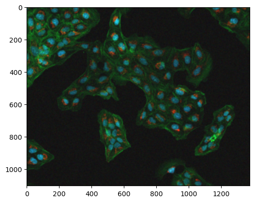
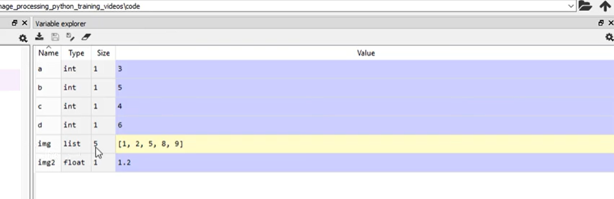
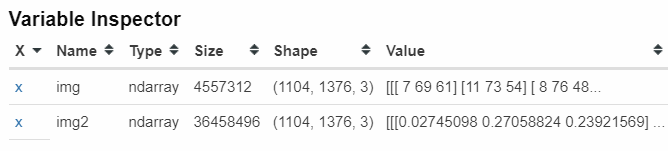

DIP-Introductory python tutorials for image processing(1-21)
目录
相关资源
Tutorial 01 - Why is it important for researchers to learn coding?
Tutorial 02 - What is digital image processing?
Tutorial 03 - Image processing in imageJ, ZEN, and APEER
Tutorial 04 - Appreciating the simplicity of python
- 使用Python给图像添加 Sigma=2 的高斯模糊
from skimage import io, filters
from matplotlib import pyplot as plt
img = io.imread('images/Osteosarcoma_01_25Sigma_noise.tif')
gaussian_img = filters.gaussian(img, sigma=2)
plt.imshow(gaussian_img)
|

Tutorial 05 - How to install python using Anaconda
教你怎么装 Anaconda 和 Spyder..
Tutorial 06 - Understanding Anaconda Packages
教你怎么用 Anaconda ..
Tutorial 06b - Understanding python environments (using Anaconda)
教你怎么管理 Anaconda 环境..
Tutorial 07 - Getting familiar with spyder IDE
教你怎么用 Sypder..

Variable explorer 可以实时显示变量的类型和值?有点意思
Tutorial 08 - What are libraries in python
介绍了 Python 中库(library)的概念
Tutorial 09 - Top 5 python libraries for image analysis
PyPI · The Python Package Index
- Image processing
- scikit-image
- Opencv-python
- Data analysis
- Plotting & visualization
- Other libraries worth mentioning
- scipy - scientfic and numerical tools, extension of numpy
- keras / tensorflow - deep learning
- seaborn and plotly - advanced, highly customizable plotting
- czifile, tifffile - many other libraries for specific tasks
Tutorial 10 - Writing your first lines of code in Python
教你怎么在 Spyder 里写 Python 代码, 算了, 我还是用 Jupyter 吧..
Tutorial 11 - Operators and basic math in Python
教你怎么用 Python 里的运算符和基本运算..
Tutorial 12 - What are Lists in Python
教你怎么用 Python 里的 list..
Tutorial 13 - What are Tuples in Python
教你怎么用 Python 里的 tuple..
就是个定义以后值不可变的 list..
Tutorial 14 - What are Dictionaries in Python
教你怎么用 Python 里的字典..
Dictionaries: a key and a value
life_sciences = {'Botany': 'plants',
'Zoology': 'animals',
'Virology': 'viruses',
'Cell_biology': 'cells'}
|
life_sciences = dict([('Botany', 'plants'),
('Zoology', 'animals'),
('Virology', 'viruses'),
('Cell_biology', 'cells')])
|
life_sciences = dict(Botany = 'plants',
Zoology = 'animals',
Virology = 'viruses',
Cell_biology='cells')
|
dict
print('Zoology' in life_sciences)
|
True
life_sciences['Neuroscience'] = 'nervous_system'
|
{'Botany': 'plants', 'Zoology': 'animals', 'Virology': 'viruses', 'Cell_biology': 'cells', 'Neuroscience': 'nervous_system'}
del life_sciences['Neuroscience']
|
{'Botany': 'plants', 'Zoology': 'animals', 'Virology': 'viruses', 'Cell_biology': 'cells'}
- 定义字典时只能用 tuple 作 key 而不是 list:
b = {(1, 0): 'a', (1, 1): 'b', (2, 2): 'c', (3, 2): 'd'}
|
c = {[1, 0]: 'a', [1, 1]: 'b', [2, 2]: 'c', [3, 2]: 'd'}
|
---------------------------------------------------------------------------
TypeError Traceback (most recent call last)
Input In [12], in <cell line: 1>()
----> 1 c = {[1, 0]: 'a', [1, 1]: 'b', [2, 2]: 'c', [3, 2]: 'd'}
TypeError: unhashable type: 'list'
d = list(life_sciences.keys())
d
|
['Botany', 'Zoology', 'Virology', 'Cell_biology']
e = list(life_sciences.values())
e
|
['plants', 'animals', 'viruses', 'cells']
Tutorial 15 - What are numpy arrays in Python
教你了解 numpy
a = [1, 2, 3, 4, 5]
b = 2 * a
b
|
[1, 2, 3, 4, 5, 1, 2, 3, 4, 5]
list
import numpy as np
c = np.array(a)
d = 2 * c
d
|
array([ 2, 4, 6, 8, 10])
numpy.ndarray
array([ 1, 4, 9, 16, 25], dtype=int32)
import numpy as np
x = np.array([[1, 2], [3, 4]])
y = np.array([[1, 2], [3, 4]], dtype=np.float64)
y/2
|
array([[0.5, 1. ],
[1.5, 2. ]])
from skimage import io
img1 = io.imread('images/Osteosarcoma_01.tif')
type(img1)
|
numpy.ndarray
(1104, 1376, 3)
a = np.ones_like(img1)
a.shape
|
(1104, 1376, 3)
import numpy as np
a = np.array([[1, 2, 3, 4], [5, 6, 7, 8], [9, 10, 11, 12]])
np.shape(a)
|
(3, 4)
array([[ 1, 2, 3, 4],
[ 5, 6, 7, 8],
[ 9, 10, 11, 12]])
array([[1, 2, 3, 4],
[5, 6, 7, 8]])
array([[2, 3],
[6, 7]])
array([15, 18, 21, 24])
array([10, 26, 42])
12
Tutorial 16 - Data types in python
| 类型 |
名称 |
| Text |
str |
| Numbers |
int, float, complex |
| Arrays(lists) |
list, tuple, range |
| Mapping |
dict |
| Boolean(True/False) |
bool |
- For image processing using skimage:
| 变量名 |
值域 |
| uint8 |
0 to 255 |
| uint16 |
0 to 65535 |
| uint32 |
0 to 2^32-1 |
| float |
-1 to 1 or 0 to 1 |
| int8 |
-128 to 127 |
| int16 |
-32768 to 32767 |
| int32 |
-2^32 to 2^32-1 |
from skimage import io, img_as_float
img = io.imread('images/Osteosarcoma_01.tif')
img2 = img_as_float(img)
|

255
1.0
Tutorial 17 - if and else statements in python
教你怎么用 Python 里的 if-else..
Tutorial 18 - while loops in python
教你怎么用 Python 里的 while 循环..
Tutorial 19 - for loops in python
教你怎么用 Python 里的 for 循环..
通常用于遍历数组里的值
Tutorial 20 - Functions in Python
教你怎么用 Python 里的函数 ..
Tutorial 21 - Lambda Functions in Python
def squared(x):
return x ** 2
|
16
25
a = lambda x, y: 2 * x ** 2 + 3 * y
a(3, 5)
|
33
def distance_eqn(u, a):
return lambda t: u * t + ((1 / 2) * a * t ** 2)
|
dist = distance_eqn(5, 10)
dist(20)
|
2100.0
2100.0